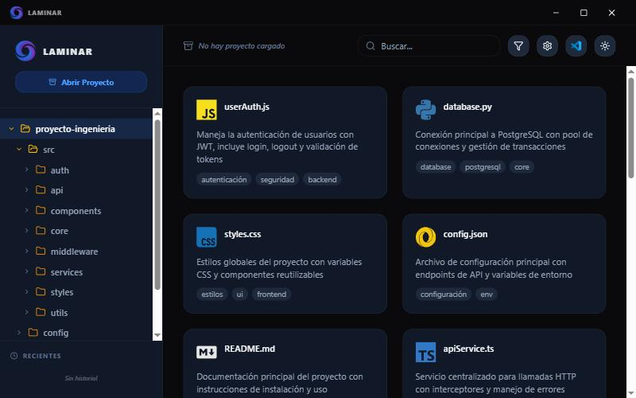
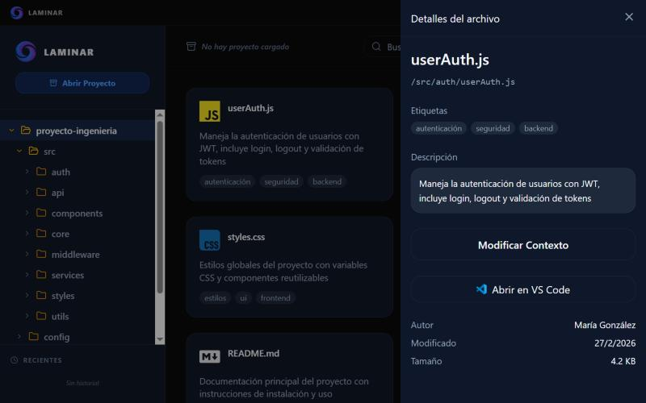

Desktop app, 2025
Laminar
A desktop app that lets engineering students version their projects without the command line: open a folder, see what changed, sync to GitHub. I designed it alone, from first wireframe to working app.

Version control without the command line: open a folder, see what changed, sync to GitHub.


Syncing is a guided step
“Prepare sync” shows what will be uploaded before anything happens. While the Python back end runs Git, the app reports progress, so nobody stares at a frozen window.
Then I built it
I generated the React front end from my Figma file with Figma Make and wired it to a Python/PyQt back end. Every screen I designed was a screen I had to build, which taught me to keep the number of states small.
How it fits together
- A Python and PyQt6 shell handles the window, the file system and the Git commands, running sync on a separate thread so the interface never locks up.
- The interface is React, TypeScript and Vite, running inside the desktop window.
- A QWebChannel bridge lets the React side call Python directly, for things like syncing a repository or opening a file in VS Code.